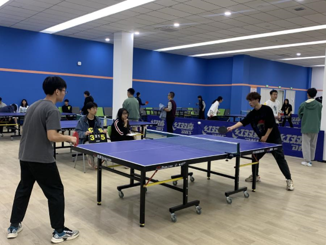

Welcome to my personal page
在所有的兴趣爱好中，我最喜欢的就是乒乓球和羽毛球。对羽毛球的热情源于高中时期，那时每周我都会和同学去体育馆占场地， 打羽毛球的时间是忙碌学习生活中为数不多的闲暇时光，打羽毛球可以让我忘记平时生活的种种不快，获得压力的最大释放。乒乓 球则是在上大学之后才开始接触，每周一次的乒乓球课，周末和乒乓球友的切磋，既长进了球技，又使我深深地爱上了乒乓球这项 运动。
乒乓球（table tennis），被称为中国的“国球”，是一种世界流行的球类体育项目，包括进攻、对抗和防守。 乒乓球起源于英国，“乒乓球”一名起源自1900年，因其打击时发出“Ping Pong”的声音而得名。在中国大陆以 “乒乓球”作为它的官方名称，中国香港及澳门等地区亦同。1926年1月，在德国柏林举行了一次国际乒乓球赛， 共有9个国家的64名男运动员参加了比赛。同年12月，国际乒乓球联合会正式成立，并把在伦敦举行的欧洲锦标 赛命名为第一届世界乒乓球锦标赛。
